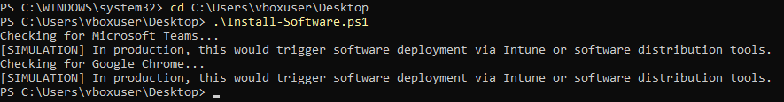
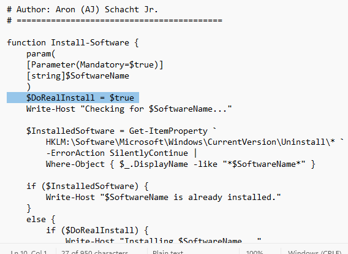
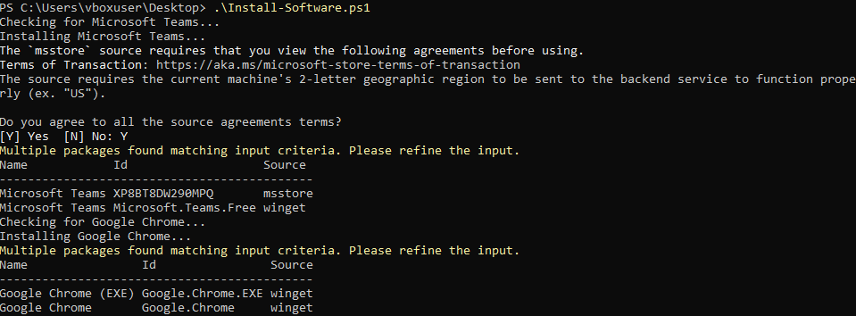

This project demonstrates a simulated enterprise endpoint setup workflow using PowerShell. The script automates common administrative tasks such as software installation checks, security configuration, firewall policy application, and network resource mapping.
This project was developed and tested in a controlled environment using PowerShell to simulate enterprise endpoint configuration workflows. Core logic was validated through system queries and conditional checks to reflect real administrative tasks without modifying the host system.
Script verifies the environment and confirms execution in demo mode.
Checks for required enterprise software like browsers, compression tools, and VPN clients.
Applies firewall policy rules and prepares the endpoint for enterprise network access.
Completes the automated setup workflow and confirms configuration status.
# Author: Aron (AJ) Schacht Jr.
# ==========================================
function Install-Software {
param(
[Parameter(Mandatory=$true)]
[string]$SoftwareName
)
$DoRealInstall = $false
Write-Host "Checking for $SoftwareName..."
$InstalledSoftware = Get-ItemProperty `
HKLM:\Software\Microsoft\Windows\CurrentVersion\Uninstall\* `
-ErrorAction SilentlyContinue |
Where-Object { $_.DisplayName -like "*$SoftwareName*" }
if ($InstalledSoftware) {
Write-Host "$SoftwareName is already installed."
}
else {
if ($DoRealInstall) {
Write-Host "Installing $SoftwareName..."
winget install $SoftwareName
}
else {
Write-Host "[SIMULATION] In production, this would trigger software deployment via Intune or software distribution tools."
}
}
}
Install-Software "Microsoft Teams"
Install-Software "Google Chrome"
Some implementation details are intentionally redacted. Full workflow demonstrated in a controlled test environment.
The following output demonstrates how the script checks for installed software using system registry queries.
Checking for Microsoft Teams... Microsoft Teams is already installed. Checking for Google Chrome... Google Chrome is already installed.
If software is not found: Software would be installed here.
Screenshots captured directly from the virtual machine during configuration and validation.


